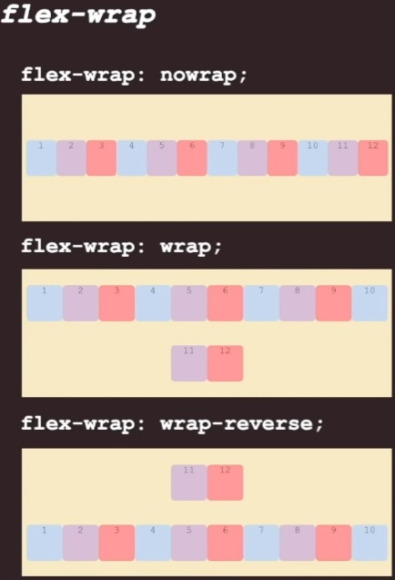

Flex Items
Os flex items são os elementos filhos de um flex container. Quando você aplica display: flex; a um elemento pai, ele se torna um flex container e seus filhos diretos se tornam flex items.
Confira o exemplo a seguir:

Como visto nesse exemplo, Essas configurações serao aplicadas nos filhos, os flex items.
flex-direction
A propriedade CSS flex-direction define a direção
principal em que os itens flexíveis são posicionados dentro de um
container flexível. Ela determina se os itens são dispostos
horizontalmente ou verticalmente, assim como a ordem em que aparecem
no layout. Existem quatro valores principais para flex-direction:

- Os itens são dispostos da esquerda para a direita na direção do eixo principal, com o início à esquerda e o final à direita.
- Similar a row, mas os itens são dispostos da direita para a esquerda, com o início à direita e o final à esquerda.
- Os itens são dispostos de cima para baixo na direção do eixo principal, com o início no topo e o final na parte inferior.
- Similar a column, mas os itens são dispostos de baixo para cima, com o início na parte inferior e o final no topo.
row:
row-reverse:
column:
column-reverse:
Por padrão, quando a propriedade flex-direction não é
especificada, o valor assumido é row. Isso
significa que os itens flexíveis são dispostos da esquerda para a
direita na direção do eixo principal, com o início à esquerda e o
final à direita dentro do container flexível.
O valor "row" é o que utilizaremos no decorrer da matéria.
justify-content
A propriedade CSS justify-content é utilizada em
containers flexíveis para controlar o alinhamento dos itens
flexíveis ao longo do eixo principal. Ela determina como o espaço
disponível é distribuído entre os itens flexíveis quando há espaço
sobrando no container. Existem vários valores possíveis para
justify-content, cada um com um efeito distinto no
layout:
- flex-start: Alinha os itens no início do container ao longo do eixo principal.
- flex-end: Alinha os itens no final do container ao longo do eixo principal.
- center: Centraliza os itens ao longo do eixo principal dentro do container.
- space-between: Distribui os itens igualmente ao longo do eixo principal, com espaços iguais entre eles e nas extremidades.
- space-around: Distribui os itens igualmente ao longo do eixo principal, com espaços iguais ao redor deles.
Por padrão, quando a propriedade justify-content não é
especificada, o valor assumido é flex-start, o que
significa que os itens são alinhados no início do container ao longo
do eixo principal.
No entanto, ao longo do curso, utilizaremos o valor
center, que centraliza os itens ao longo do eixo principal dentro do
container flexível. Isso proporciona um layout mais equilibrado e
esteticamente agradável. Também adicionaremos 500px de altura pro
nosso container.
align-items
A propriedade CSS align-items é utilizada em containers
flexíveis para controlar o alinhamento dos itens flexíveis ao longo
do eixo transversal. Ela determina como os itens são posicionados
verticalmente dentro do container flexível. Existem vários valores
possíveis para align-items, cada um com um efeito
específico no layout:
- flex-start: Os itens são alinhados no início do container ao longo do eixo transversal.
- flex-end: Os itens são alinhados no final do container ao longo do eixo transversal.
- center: Os itens são centralizados verticalmente dentro do container ao longo do eixo transversal.
- stretch: Os itens são esticados para preencher todo o tamanho do container no eixo transversal.
- baseline: Os itens são alinhados com base na linha de base de seu conteúdo, se houver, dentro do container.
flex-wrap
A propriedade CSS flex-wrap é utilizada em containers flexíveis para controlar o comportamento de quebra de linha dos itens flexíveis quando não há espaço suficiente no container para todos os itens ocuparem uma única linha. Ela determina se os itens devem ser dispostos em uma única linha (o valor padrão) ou se podem ser quebrados em linhas múltiplas. Existem três valores possíveis para flex-wrap:
- nowrap: Os itens são forçados a permanecerem em uma única linha, mesmo que isso cause transbordamento do container.
- wrap: Os itens são dispostos em várias linhas, se necessário, para que todos se ajustem dentro do container.
- wrap-reverse: Os itens são dispostos em várias linhas, começando da última linha até a primeira.
flex-flow
A propriedade CSS flex-flow é uma abreviação conveniente que combina as propriedades flex-direction e flex-wrap em uma única declaração. Isso permite definir a direção de layout dos itens flexíveis ao longo do eixo principal e controlar se os itens podem ser quebrados em múltiplas linhas, tudo em uma única linha de código.
A sintaxe geral da propriedade flex-flow é:
flex-flow: <flex-direction> <flex-wrap>;
No estudo usaremos:
flex-flow: row wrap;
align-content
A propriedade CSS align-content é utilizada em
containers flexíveis de múltiplas linhas para controlar o
alinhamento dos itens flexíveis ao longo do eixo transversal, quando
há espaço extra disponível no container. Lembrando que essa
propriedade só se torna ativa se utilizarmos
flex-wrap: wrap;
- flex-start: Alinha as linhas de itens no início do container.
- flex-end: Alinha as linhas de itens no final do container.
- center: Centraliza as linhas de itens verticalmente no container.
- space-between: Distribui o espaço restante de forma uniforme entre as linhas de itens, com espaços iguais entre elas e nas extremidades.
- space-around: Distribui o espaço restante de forma uniforme entre as linhas de itens, com espaços iguais ao redor delas.
- stretch: Estica as linhas de itens para preencher todo o espaço disponível no eixo transversal.
gap, row-gap e column-gap
As propriedades gap, row-gap e column-gap são utilizadas em layouts de grade (grid) para controlar o espaçamento entre as linhas e colunas dos itens dentro do grid.
- gap: Esta propriedade CSS é uma abreviação conveniente para definir o espaçamento entre as linhas e colunas de um grid. Ela define o espaçamento tanto horizontalmente (entre as colunas) quanto verticalmente (entre as linhas) do grid. Quando usada sozinha, ela define o mesmo valor para row-gap e column-gap. Por exemplo: gap: 10px; define um espaçamento de 10 pixels entre as linhas e colunas.
- row-gap: Esta propriedade CSS define o espaçamento entre as linhas de um grid. Ela é usada para controlar o espaçamento vertical entre as linhas, deixando um espaço definido entre cada linha do grid.
- column-gap: Esta propriedade CSS define o espaçamento entre as colunas de um grid. Ela é usada para controlar o espaçamento horizontal entre as colunas, deixando um espaço definido entre cada coluna do grid.
Hora da Revisão!